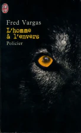

L'homme à l'envers
Après avoir trouvé des brebis égorgées par un loup c’est le tour de l’éleveuse d’être tuée, la nouvelle fait terreur dans le village de Saint-Victor, et les villageois soupçonnent que ce soit le crime d’un loup-garou.
L’homme à l’envers est un roman policier français de Fred Vargas publié en 1999. Fred Vargas est une écrivaine, archéologiste et médiéviste française qui est considéré comme un prodige de la littérature française.
Histoire
L’histoire prend place dans le sud de la France, dans le village de Saint-Victor, situé entre vallée des Merveilles et le parc du Mercantour. Tout se passait bien jusqu’à ce que les loups se réintroduisent en pleine liberté. Lawrence, un journaliste canadien s’installe dans le village et observe les loups pour un documentaire. À l’époque on soupçonnait les personnes chauves d’être des loups-garous. Pour vérifier leur nature on leur coupait la peau du cou jusqu’au couilles pour vérifier qu’il n’y ait pas de poils à l’intérieur. D’où le nom de l’œuvre « l’homme à l’envers », on présumait que les loups-garous faisaient ressortir leurs poils intérieurs la nuit. Massart, un boucher du village fut accusé d’avoir assassiné une éleveuse de brebis après leur dispute. Le fait qu’il n’avait que très peut de poils n’arrangea pas les choses, il dut fuir le village sans laisser aucune trace pour ne pas être découpé. Après son départ plusieurs personnes continuent à décéder les unes après les autres. Tous les villageois croyaient que le boucher était le tueur en série. Le détective Adamsberg mène son enquête.

Vallée des Alpes
“Comme des tisons, mon gars, comme des tisons ça fait, les yeux du loup, la nuit.”
-Extrait du livre
Massart, un boucher du village fut accusé d’avoir assassiné une éleveuse de brebis après leur dispute. Le fait qu’il n’avait que très peut de poils n’arrangea pas les choses, il dut fuir le village sans laisser aucune trace pour ne pas être découpé. Après son départ plusieurs personnes continuent à décéder les unes après les autres. Tous les villageois croyaient que le boucher était le tueur en série. Le détective Adamsberg mène son enquête.
Le retournement
Cependant on découvre à la fin la véritable identité du meurtrier, ce n’était personne d’autre que le journaliste canadien, Lawrence. Il utilisait le crâne d'un loup arctique, plus grand des loups, pour déchiqueter ses victimes. Il avait en faite un but bien précis : se venger des amants de sa mère à la place de son père. Il a été incité à faire tout cela depuis son plus jeune âge par son paternel qui lui s’est occupé du 1er amant.
“Louveteau devient loup, qu'il soit élevé ou non parmi les hommes.”
-Proverbe turc

Crâne d'un loup articque
Le livre est un véritable chef-d'œuvre, qui tourne autour du dévoilement de l'identité du meurtrier qui se prenait pour un loup-garou. Qui au final n'était qu'un humain, mais plus redoutable qu'un loup-garou.
Les livres du même auteur: